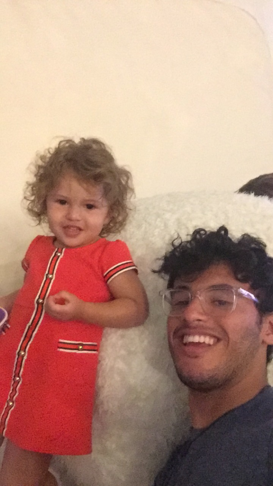
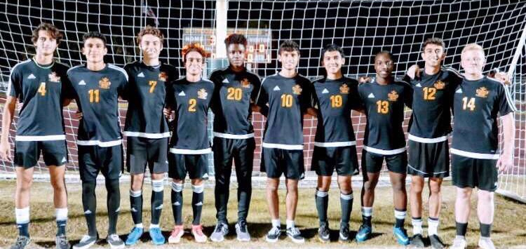

Hey, I'm Frederick Santiago!
I am a rising computer science sophomore at the University of Central Florida. I am passionate about tech, diversity, and people.
Outside of school I'm big fan of:
Family
I have 5 brothers! 2 are older than me, but the others are way, way younger than me. So I spend a lot of my time playing with the little ones.
Soccer
Oddly enough the first sports I really got into was basketball, and then football. It wasn't until I moved, and lived in Colombia for two years is where I fell in love with soccer. I've played soccer ever since.
Video Games
I don't play as much as I used to, but I stil try to sauce up randoms in FIFA, and, my favorite, Rocket League.

Reggaeton
This is what I listen to the most. I like modern reggaeton more compared to the older ones back in Daddy Yankee's early days. But, don't think I won't break it down to Gasolina.